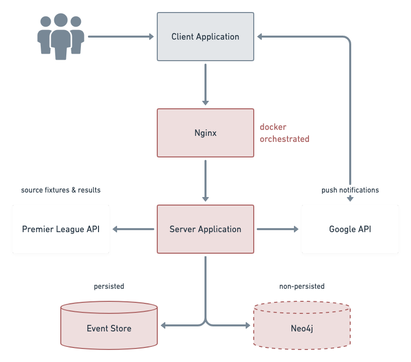

RightResult Write Up
- elm elmish event-driven event store fable fsharp neo4j
About the design
What problem inspired this work?
RightResult is the SAAS incarnation of a game my friend would coordinate via emails and a spreadsheet.
Each week, he would email game members requesting predictions for the weekend’s English Premier League fixtures. Predictions and fixture results were entered into a spreadsheet. The scores would be tallied-up and communicated back to members. The winner was who had predicted most accurately.
I built a product to ease the coordination burden and improve the experience for members. It also serves as a technical laboratory with real challenges.
Emphasized links refer to source code.
What is your solution’s approach?
RightResult automates-away most of the game coordination responsibilities. The application sources the weekly fixtures and follows up with the results. This reduces the human effort and improves reliability.
Members identify using a social media account. Once logged in, members can submit predictions for open fixtures. A prediction consists of the number of goals scored for both teams in the fixture. After a fixture begins it is closed for predictions. Predictions are compared to the result as soon as the fixture ends. Performance metrics are calculated and immediately made available for review in the application.
The game awards 3 points for predicting the correct number of goals scored by both teams. The number of goals determines the fixture outcome: home win, draw, or away win. The game awards 1 point for a correct outcome as inferred from the prediction. For example, a 1-0 prediction for a 2-0 fixture result yields 1 point because the outcome was a home win. Each player can ‘double down’ on one fixture per week to double the awarded points.
All members are included in the Global League. Members are able to create private leagues and invite friends to join. All leagues compare members’ performance using a league table. Historic views of league tables make performance traceable over the course of the football season. This means it is practical to identify present and historic winners. The matrix feature offers a holistic view of league members’ predictions per week.
The application supports push notifications on supported platforms. Subscribed members are informed when new fixtures are added. My friend continues to announce winners by email which preserves a sense of community.
How is your solution used?
Please enjoy the walkthrough video!
What forces were you designing for?
The priorities were clear because my friends and I were members of the original game. The driving force was the desire to reduce burden and modernise the experience. There was little doubt that a web-based product would bring these benefits. As I was willing to pay development costs with my own time, there was no downside to consider.
I used the Yeoman scaffolding framework to build the first iteration of RightResult. The frontend was implemented with Angular and raw JS. I optimised for speed of delivery and not longevity or maintainability. This satisfied the need to produce an MVP in time for the new football season.
The first version only persisted predictions and results data. League tables were not available at rest. To view a league table, the application loaded all the data to calculate the awarded points. The response time would deteriorate as the season progressed due to this lazy-loaded delivery. The poor performance drew complaints from frustrated members.
The latest iteration improves on maintainability with the choice to use F#. The power of the type system is leveraged throughout the stack. I have confidence in changes even when the domain is not fresh in my mind. The response time remains low throughout the season because each view is eagerly-evaluated. This is discussed further in the architecture section.
What alternatives did you consider?
I was curious about graph databases. The second iteration of RightResult allowed me to solve a real problem with graph technology. I used Neo4j to persist relationships between members and private leagues. I took the time to up-skill and satisfy my curiosity. On reflection, the choice has not added significant value to the product. Although, there is value in the experience gained learning any new technology.
Graph databases are powerful in a relationship-rich domain. The potential to gain insight grows with the number of distinct relationship types. The member/league relationship is naturally shallow so there is little explorative potential. A simpler alternative would have been a relational database like MySql or Postgres. The time spent up-skilling represents lost opportunity-cost.
About the implementation
How is your solution architected?
At the code-level, RightResult is based on the SAFE stack application model. This means F# is used on the frontend and backend. I used Fable.Remoting to share a domain model across the both client and server applications. This maximises compiler support.
Both client and server are event-driven applications, though the implementations differ.
The client application uses the Elmish framework. This delivers the design pattern at the core of the Elm programming language. User interactions are modelled as commands that may produce events. Events are the only way that application state can be changed. All possible events are defined with a union type so can be evaluated with a pattern match expression.
An example input command is ‘Decrement Score’. The output would be a ‘Score Decremented’ event if the state holds a score greater than zero. Otherwise, no events are returned. This highlights when input is validated, and is summarised by the following signature.
(command * state) -> event list
Next, the elmish framework calls a function to apply the state change caused by the event. The ‘Score Decremented’ event will cause the score in the application state to reduce by one. The output of the function is the updated application state.
(event * state) -> state
The state is used to render the view using a function provided to the elmish framework. This continuous, iterative application of event-to-state constitutes the Model View Update pattern (MVU). It can be thought of as the fold function at the application-level. Each step is pure, causing no side-effects and requiring no shared state.
The event-driven aspect of the server application is provided by Event Store. This is a database designed for storing and replaying events. As with the client, input commands received by the server are validated and may produce events. Events committed to Event Store are immutable and persisted permanently. The application is also subscribed to the database such that new events can be acted on.
Like the client, the server application reacts to events by updating its state. Application state is managed with two mutable storage approaches. The first uses Neo4j to persist the relationships between members and leagues. The second uses in-memory maps to hold league tables and members’ performance metrics. When the server application starts it destroys the data stored in Neo4j. Naturally, the in-memory storage is empty on start up. The application asks the database to replay all events in-order from the beginning. Each event is handled according to application logic and applied to the current state. The output is captured in mutable storage and so rehydrates application state. Once the application has replayed all existing events it remains subscribed for new ones.
An example of a server application event is ‘Fixture Classified’. This is when the application sources the result of a fixture. The application reacts to this event by comparing the result to the predictions. The score for each members’ prediction is applied to each league the member belongs to. League tables are updated in-memory. Members’ performance metrics are also recalculated and captured. In this way, all tabular views in the application are eagerly-evaluated. The data is always available at rest and ready to serve on request. This improves response time as mentioned in the quality attributes section.
Traffic volume is low enough that the entire application can be hosted on a single Digital Ocean droplet (virtual machine). Nginx hosts the TLS certificate. The server application, proxy, and database components are provisioned using docker-compose. The Event Store container is configured with a volume so events are persisted to disk. The diagram below is scoped to the component level of architecture.

What’s a compromise you had to make?
The single-instance hosting approach is one giant trade-off. The application will not scale if a traffic spike occurred. However, rearchitecting for scalability would be expensive. The risk of increased traffic is low, and the audience is not globally distributed. This is therefore an acceptable compromise for now.
Background-tasks such as result fetching are coupled to the web application. Tasks are scheduled using a timeout running inside a hosted service. A preferable solution would be to break-out the background tasks into containers. They would operate at the same level, and have a sibling relationship with the web application rather than a parent/child one. Independently managed tasks would decouple the concepts and reduce resource contention. This code-level compromise saved development time and keeps the packaging process simple.
How would you spend a week developing further?
I would add value by developing game features. A live-score feature would supplement the UI for in-play fixtures. Members have also suggested richer rules to support more ways to award points for each fixture. The event stream could be replayed against the new rules to observe the effect on historic winners.
I would like to further gamify the product by celebrating achievements. Historic winners could be decorated with badges. This could also be applied retrospectively by replaying events. The challenge is to curate a suitable set of awards.
I would like to automate the Let’s Encrypt certificate renewal to reduce operational overhead. The next iteration of RightResult will be built using serverless technology such as AWS lambda. This will further reduce running costs and increase scalability.
If the question was “what would you do with a team of engineers?” then my priorities would be different. The continuous integration pipeline would be enhanced with more tests. Effort would be invested in developer workflow to improve productivity. Test-data generation and temporary stack support would aid issue-reproduction.
What would you have done with a week less?
Push notifications were most recently added to the application. This non-core feature was not required for launch.
What would change about the delivery?
The fundamental approach would not change significantly. Core features and Job(s)-To-Be-Done would be prioritised for the MVP. Further features would be delivered incrementally. Feature toggling could be applied on a per-member basis to get feedback with minimal risk.
Member-led explorative testing before the season begins would help polish the rough edges. Load and performance tests would define the bounds of the application. Knowing the threshold means I can make an informed hosting choice rather than hoping for the best.
How did you get feedback?
Many of my friends are members of the game. We have candid conversations about the suitability of existing features and the priority of new ones. Qualitative feedback from beyond my circle of friends comes via social media. The email channel also receives suggestions and bug reports. I experimented with a feedback form in the application but gained little insight.
The Neo4j database allows for quantitive analysis. However, the answers to questions like “how many members are in more than one league with the same member” are worth little with a low sample-size. Off-the-shelf analytics platforms would be excessive solutions for the same reason. I will think critically about the questions I want to answer when the product matures. The strategic objectives and velocity could be measured empirically. For now, it remains a hobby that helps to bind a group of friends.